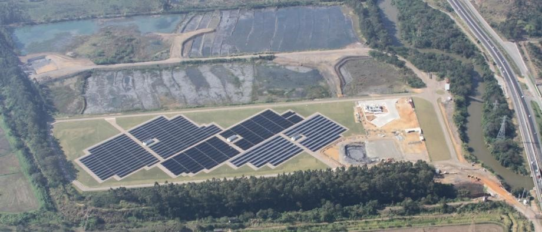

A maior usina de energia solar do Brasil, a Usina Fotovoltaica Cidade Azul, começou a operar comercialmente neste mês em Tubarão, no sul de Santa Catarina e possui 19.424 paineis solares.
Trata-se da maior usina solar do país em potência: são 3 Megawatts gerados atualmente, o suficiente para abastecer 2.500 casas todos os dias. É praticamente um quarto de toda a energia solar produzida no Brasil.
É também a maior usina solar brasileira em tamanho: são 19.424 painéis solares instalados em uma área de 10 hectares, equivalente a dez campos de futebol.
Com investimentos de R$ 30 milhões, a usina foi desenvolvida pela empresa Tractebel Energia em parceria com a Universidade Federal de Santa Catarina (UFSC).
Ela começou a funcionar em março deste ano, apenas em caráter experimental. Agora, foi conectada ao Sistema Interligado Nacional (SIN), ou seja, a energia gerada passou a ser distribuída para todo o país.
A geração dessa usina não afeta a conta de luz, segundo a Aneel. A vantagem, então, é o uso de uma fonte renovável e limpa.
Energia solar ainda é 0,01% da energia produzida no Brasil.
Atualmente, operam no país 164 usinas solares, segundo a Agência Nacional de Energia Elétrica (Aneel).
Porém, a participação da energia solar dentro da energia consumida no país ainda é muito pequena: cerca de 0,01%.
"A capacidade dessas usinas ainda é muito pequena. As maiores fontes são hídrica e térmica, que representam 67% e 28%, respectivamente, da matriz energética nacional", afirma a agência.
Usina no Ceará tema a maior capacidade instalada.
A Usina Fotovoltaica Cidade Azul atualmente gera 3MW de energia, mas pretende chegar a 4MW.
Ela não é a usina com a maior capacidade instalada, no entanto. Segundo a Aneel, a usina de Tauá, no Ceará, poderá gerar até 5 MW quando operar em toda sua capacidade.
Fontes:
economia.uol.com.br